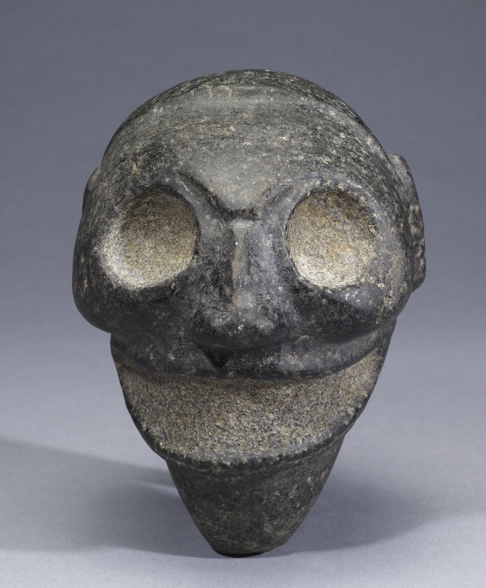
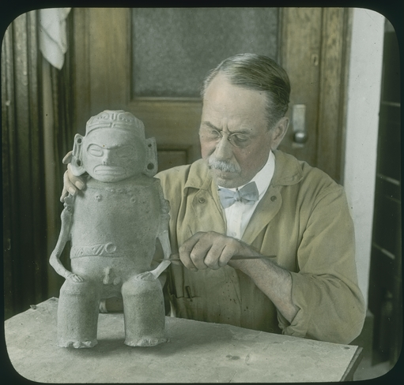
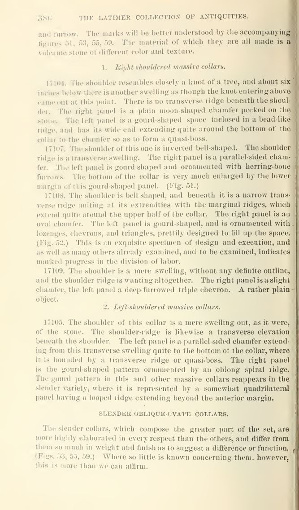
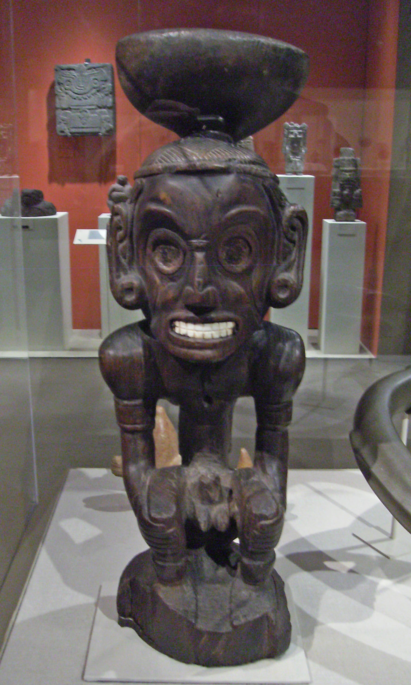
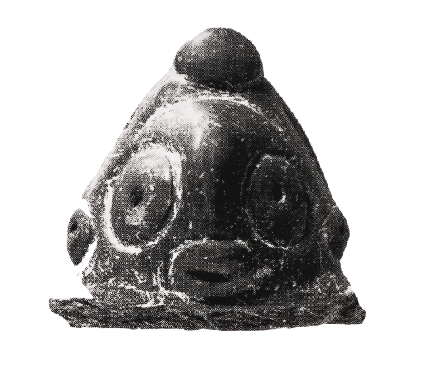
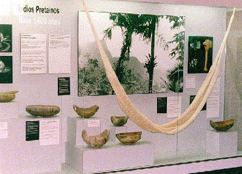
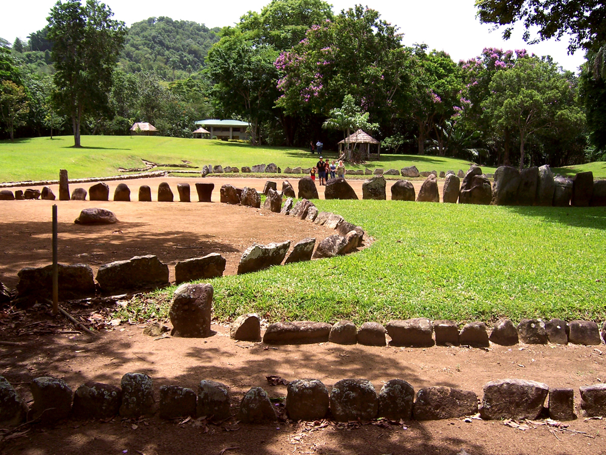
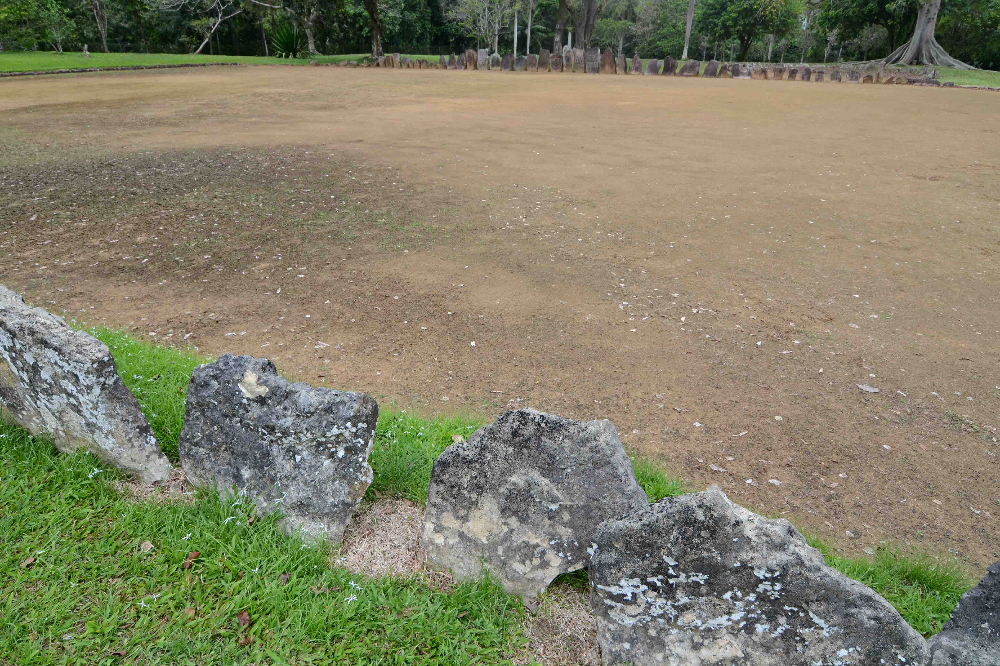
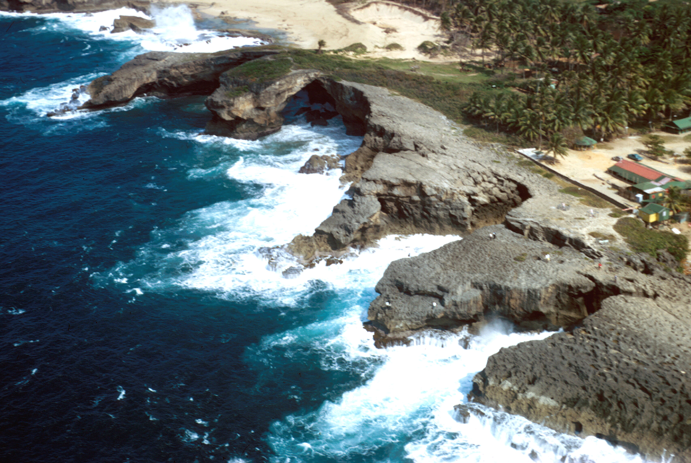

Boriken, the land of the brave lord
The Taíno name for the island now called Puerto Rico — sometimes written Boriken, Borikén, or Borinquén, and still the root of "boricua," how Puerto Ricans call themselves today. This is what the record actually shows about the people who were here first, on the same ground the Arecibo/Lares side of this family comes from.
The five-minute version
Picture Puerto Rico with no roads, no cities, no Spanish language — just mountains, rivers, and a coastline, and people already living there who'd called it home for over a thousand years. Those people are the Taíno (rhymes with "high-no"). They didn't call themselves that during their own lifetime — that name came later — but it's what we call the culture that had developed on this island, and neighboring islands like Hispaniola and Cuba, by the time the first European ships showed up in 1493.
They weren't a simple or scattered people. They had villages, farms, leaders, religion, art, and a working society, the same as any settled culture anywhere in the world at the time — just without metal tools, without writing, and without horses or large domesticated animals, which made their world look very different from Europe's on the surface even though the people living in it were just as complex. Everything below walks through who they were, what a day in their life looked like, what happened when Spain arrived, and what's still standing today that you could actually go see. Picture it like a documentary you're about to walk through page by page, not a list of facts to memorize.
What "Boriken" means
Early Spanish chroniclers, including Gonzalo Fernández de Oviedo y Valdés writing in the 1500s, recorded the island's own name among its people as some form of Boriken or Borinquen — commonly translated as "land of the great/brave lord" or "land of the valiant one," built from Taíno roots referring to a great or noble presence. Spanish colonists renamed the island Puerto Rico ("rich port") and shifted the name Boriken/Borinquén onto San Juan for a time, before the names settled into their modern form. "Boricua," the word Puerto Ricans use for themselves today, comes directly from this root — it is, quite literally, a Taíno word still spoken every day.
Who was here
The Taíno were an Arawakan-speaking people whose ancestors migrated up the island chain from South America over many centuries before European contact, developing a distinct culture across what's now Puerto Rico, Hispaniola, Cuba, Jamaica, and the Bahamas. Society was organized into cacicazgos — chiefdoms led by a cacique — with village life centered on the bohío (thatched round house), the batey (a rectangular ceremonial ball court, dozens of which survive as stone-lined archaeological sites across the island, including at Utuado and Caguana in the mountain interior this family is from), and an agricultural system built around conucos — raised earthen mounds for growing yuca (cassava), the staple crop, along with corn, beans, and sweet potato. Religious life centered on zemís (or cemís) — carved representations of spirits and ancestors, some of which survive today as museum pieces and are among the only physical Taíno objects that made it through the centuries intact.



What a day actually looked like
Picture waking up in a round, thatched house called a bohío — wooden poles, palm-leaf roof, open enough to let the ocean air through, arranged in a circle facing an open dirt plaza at the center of the village. That plaza did double duty: everyday gathering space, and the batey — a rectangular court, sometimes lined with upright stone slabs carved with faces, where a ball game was played that mixed sport, ritual, and settling disputes between villages. The cacique's own house was usually the biggest one facing that plaza, not hidden away but right in the middle of daily life. This whole layout, a village built around a shared court instead of private walled-off homes, is called a yucayeque.
Most of the day was physical and outdoor: farming raised mounds of yuca, walking to the river or coast to fish, weaving cotton into hammocks and cloth, shaping and painting clay pottery. Canoes were carved whole from single massive trees — not small rowboats, but seaworthy craft big enough to island-hop, and large enough that Columbus's own crew wrote home amazed at how fast and well-built they were, the first non-European boats most of those sailors had ever seen. At night, food centered on yuca pressed into casabe flatbread — the same bread still sold in Puerto Rican markets today — alongside corn, beans, peppers, and whatever the sea gave up that day.
Now picture the same plaza after dark, lit by fire instead of sun: the areíto. This was the community's whole library, church, and concert rolled into one night — drums, maracas, dancing in a circle, and a leader singing out the village's own history, its ancestors, its caciques, sometimes lasting until sunrise. Nothing was written down anywhere on the island; there was no Taíno alphabet. Everything anyone needed to remember — who their people were, what had happened to them, who to honor — lived in nights exactly like this one, carried forward only by people repeating it to each other, generation after generation, until it either survived or it didn't.
Not everyone held the same role
Taíno society had real social layers, not just a cacique and everyone else. The nitaínos were a noble class — sub-chiefs, village leaders, and the cacique's own extended family, who helped govern day to day. The naborias were the common people, doing most of the farming, fishing, and craft work that kept a village running. The bohique (sometimes spelled behique) was a combined healer, priest, and spiritual guide, responsible for treating illness, leading ceremonies, and communicating with the zemís on the community's behalf — a role that carried real authority alongside the cacique's own, not beneath it.
Petroglyphs — art carved before writing existed here
Taíno petroglyphs — images carved directly into stone, usually faces or figures believed to represent zemís or ancestors — survive across the island in caves and along riverbanks, some dating back centuries before European contact. La Piedra Escrita ("the written stone") in Jayuya and the petroglyphs inside Cueva del Indio near Arecibo — genuinely close to this family's own documented ground — are still standing, still visible, and still visited today. Caguana's ceremonial park, already mentioned on this page, has some of the best-preserved examples anywhere in the Caribbean, carved directly into the stone slabs lining its ballcourts.
Taíno identity today
Being Taíno isn't only something in the past tense. A modern Taíno cultural revival movement, active in Puerto Rico and among the diaspora since the late 20th century, includes people who identify as Taíno descendants today, organizations working to reconstruct and teach the Taíno language from the words and fragments that survived, and communities researching and celebrating Taíno heritage as a living identity, not only an archaeological one. It's a real, current, sometimes debated movement — not universally agreed on by historians or even within the Puerto Rican community — but it exists, is active right now, and is part of the honest, complete picture of what happened to this island's first people: not a clean disappearance, but survival, mixture, and in some communities, a deliberate return to and reclaiming of the name.
The caciques the record remembers
Spanish chroniclers wrote down the names of several real Taíno leaders, not just Agüeybaná. Guarionex led one of the island chain's larger chiefdoms and led resistance efforts against Spanish rule. Mabodamaca led a cacicazgo in the island's western mountains. Perhaps most striking for this family specifically: the coastal region of Loíza — the same town this family's documented Ceballos line runs directly through, on Angel's side — is itself named for a female cacica, recorded by the Spanish as Yuisa (sometimes written Luisa), one of the relatively few named female Taíno leaders in the colonial record. A town this family has real, documented roots in still carries a Taíno woman's name, spoken every time anyone says where they're from.

First contact
Columbus's second voyage passed the island's coast, becoming the first recorded European sighting, though no landing or settlement followed immediately. Spanish colonization began in earnest in 1508, when Juan Ponce de León, with the permission of the Taíno cacique Agüeybaná — then the island's paramount chief — established the first Spanish settlement, Caparra, near what's now San Juan.
Encomienda, and the uprising
The Spanish crown's encomienda system, formalized on the island under Ponce de León's governorship, assigned Taíno labor to individual colonists under a legal fiction of Christian instruction in exchange for forced work — in practice, a system of coerced labor in gold panning and agriculture that devastated the population through overwork, disease, and violence within a generation of contact. In 1511, under the leadership of Agüeybaná II (the first Agüeybaná's brother/successor), a coordinated Taíno uprising killed a number of Spanish colonists in the island's first major armed resistance — put down by Ponce de León's forces later that year. It was one of the earliest organized indigenous rebellions against Spanish colonization anywhere in the Americas.
Collapse, and what actually happened next
The Taíno population fell catastrophically within decades of contact — from encomienda-system labor, from imported disease the population had no immunity to, and from violence during and after the 1511 uprising. What did not happen, despite the popular version of the story, is a clean extinction. Spanish colonial records themselves, along with the Catholic Church's own baptismal registers from the era this family's confirmed line reaches back into (see The Colonial Record for Mauricio Ceballos's 1825 baptism entry, three centuries later, still using the era's own racial-mixing vocabulary), document generations of intermarriage and absorption of Taíno people and their descendants into the colonial population rather than a total disappearance. Modern genetic research on Puerto Ricans, discussed on this family's Colonial Record page, is consistent with that: Native American maternal-line ancestry is common across the island today, especially in the mountain interior towns — Lares, Utuado, and the surrounding region — this family's own confirmed lines run through.
The Taíno language
Taíno was part of the Arawakan language family, a group of related languages spoken across a huge stretch of South America and the Caribbean long before Columbus. It was never written down by the Taíno themselves — there was no Taíno alphabet — so almost everything we know of the spoken language comes from Spanish chroniclers writing down what they heard, plus the words that quietly slipped into everyday Spanish and then English and never left. As a spoken-only language with no native writing system of its own, it stopped being anyone's first language within a few generations of colonization. But entire words survived intact, carried inside Spanish itself, spoken by every generation since without anyone needing to "revive" them — they were simply never lost.
Here are some of the words still used every single day, in Puerto Rico and far beyond it:
| Taíno word | What it means today |
|---|---|
| hamaca | hammock — the Taíno invented it, Europeans had never seen one |
| huracán | hurricane — named for Jurakán, a powerful spirit |
| canoa | canoe |
| barbacoa | barbecue — a raised wooden cooking frame |
| tabaco | tobacco |
| yuca | cassava, the Taíno's most important food crop, still eaten daily |
| batey | the stone ceremonial ball court, and today also means a rural neighborhood |
| casabe | flatbread made from yuca, still sold and eaten in Puerto Rico today |
| cacique | chief or leader — still used in Spanish today for a powerful local figure |
| boriken / borinquén | the island itself — still sung about, still worn on flags and t-shirts, still the root of "boricua" |
| maraca | the shaken percussion instrument, still central to Puerto Rican music today |
| güiro | the ridged gourd scraper, another instrument still played in salsa and plena |
| iguana | iguana — the animal's actual name in most world languages today |
| caimán | caiman, the alligator relative |
| guayaba | guava, the fruit |
| guanábana | soursop, another everyday fruit still sold at markets |
| batata | sweet potato, still a staple side dish |
| maní | peanut |
| ají | chili pepper, still the word used across the Spanish-speaking Caribbean |
| sabana | savanna — open grassland, borrowed into English the same way |
| cayo | cay/key — a small low island, as in "Cayo Santiago" or the Florida Keys |
| ceiba | the ceiba tree, considered sacred by the Taíno and still a town name in eastern Puerto Rico |
| bohío | the thatched round house — still used today for a simple rural home |
| conuco | a small farm plot, still used the same way in rural Puerto Rico today |
| enagua | a woman's underskirt/slip, still an everyday word in Spanish |
| macana | a wooden war club, and today also slang for a police baton |
| cocuyo | firefly/click beetle, still used in parts of the Caribbean |
| areíto | the communal song-and-dance ceremony described above — still used as a word for a Taíno cultural gathering today |
A few commonly claimed "Taíno" words — like maíz (corn) and maguey — are disputed among linguists, some tracing to other Caribbean or Mesoamerican languages instead. This list sticks to words with solid documentation back to Taíno specifically.
And the island is covered in Taíno place-names that were never translated or renamed, still on every road sign and map today: Utuado, Guaynabo, Caguas, Bayamón, Mayagüez, Humacao, Caguana, Jayuya, Yauco, Coamo, Guánica, Cayey, Añasco, Guayama, Manatí, and Loíza itself. Even the word "Caribbean" comes from the Taíno's own name for their fiercer neighbors, the Caribe. Every one of these is a Taíno word a family can still drive to, or already lives inside.
The Taíno weren't originally islanders at all
The people who became the Taíno didn't start on Puerto Rico — they arrived, in more than one wave, over thousands of years. Tracing it back as far as the actual evidence goes:
The earliest people in the Caribbean, roughly 5,000–6,000 years ago: Archaeologists call this the "Archaic" or "Lithic" age, and specifically for Puerto Rico's route in, the Casimiroid tradition — named for its stone-tool style, arriving via Cuba and Hispaniola from Central America and the Yucatán. (A separate, related Archaic tradition, Ortoiroid, came up through the Lesser Antilles from South America instead, but Puerto Rico's own earliest evidence points to the Casimiroid route.) These were small groups of hunter-gatherers and fishers, not yet farmers, and not yet Taíno in any cultural sense.
The full named chain, generation by generation of culture rather than just "Taíno" appearing from nowhere: Casimiroid (Archaic-age, pre-farming) → Saladoid (the Arawakan farmers arriving from the Orinoco) → Ostionoid and Elenoid (the culture's own local development stages on the island over the centuries that followed) → Taíno (the "Classic" form the Spanish actually encountered in 1493). Nothing about Taíno culture sprang up complete — it's the end product of well over a thousand years of people living on this specific island, building on what came before them, the same way any culture actually forms.
The Arawakan farming migration, starting roughly 2,500 years ago: A separate, later, and much better-documented migration brought Arawakan-speaking farming peoples — archaeologists call this culture "Saladoid," named for a site in Venezuela — out of the Orinoco River region of what's now Venezuela, island-hopping north through the Lesser Antilles over centuries before reaching Puerto Rico. This is the population and language that eventually developed into what we call Taíno culture, blending with, and in many places absorbing or replacing, the earlier Archaic-age people already living on the islands.
Direct genetic proof, not just pottery and stone tools: For decades this was inferred mainly from artifact styles and language. That changed with ancient DNA. A major 2020 study in the journal Science, led by researchers including Kathrin Nägele and Cosimo Posth, sequenced ancient genomes from across the Caribbean and confirmed the South America-to-Antilles migration route directly in the genetic record, not just from what people left behind — and also documented that earlier Archaic-age populations and later Arawakan arrivals did genetically mix rather than one simply replacing the other everywhere. A larger 2021 ancient-DNA study in Nature, led by Daniel Fernandes and colleagues, added further genomes across the region and helped establish just how small the founding migrant populations actually were on some islands — direct genetic evidence, not inference, for a story that used to rest on pottery shards alone.
The closest living linguistic relatives of Taíno today are Arawakan languages still spoken by Indigenous communities in Guyana, Suriname, and Venezuela — the same mainland region the migration began from, thousands of years ago.

The Taíno world didn't stop at Puerto Rico
Everything on this page so far has been Puerto Rico's own story, but it's worth being honest about the bigger picture: Taíno culture was never contained to a single island. The same Saladoid migration that reached Puerto Rico kept moving, and the same Classic Taíno culture that developed here developed in parallel, closely related forms, across the whole Greater Antilles — making Puerto Rico one chapter of a much larger world, not an isolated case.
Hispaniola (today's Dominican Republic and Haiti) was actually the larger and, in many ways, the primary Taíno population center — bigger island, bigger population, and the first place Spain built its full colonial administration, which is exactly why what happened there became the template later applied to Puerto Rico, described earlier on this page. Major sites survive there too, including the ceremonial complex at La Aleta and the caves at Cueva de las Maravillas, both holding rock art and artifacts comparable to Caguana and Cueva del Indio here.
Cuba, the largest island in the chain, had its own Taíno population and its own cave art traditions — including, by coincidence, a separate site also called Cueva del Indio, unrelated to Puerto Rico's own cave of the same name near Arecibo.
Jamaica (a name that itself comes from the Taíno/Arawakan word Xaymaca) had a documented Taíno population at contact, though fewer major archaeological sites survive there in comparably preserved condition.
The Bahamas hold a specific, important distinction: the Lucayan people — a closely related Taíno subgroup — were the very first Indigenous people Columbus actually met, on the very first island of his 1492 landfall, before he ever reached Cuba or Hispaniola. The encounter that started everything documented on this page and on The Colonial Record happened to Lucayan Taíno people first, days before it happened to anyone in Puerto Rico's own story.
The honest picture, put together: this page tells Puerto Rico's specific, documented version of a story that played out, with real local variation, across an entire island chain — the same migration, the same culture family, the same colonial machine, repeated island by island, starting in the Bahamas and Hispaniola before it ever reached here.
Burial grounds you can actually stand in
The Tibes Indigenous Ceremonial Center in Ponce is the most significant burial site connected to this history on the island — excavations there uncovered one of the oldest cemeteries found anywhere in the Antilles, with burials predating the Taíno themselves by centuries, from the earlier Igneri/Saladoid-era people who lived at the site before Taíno culture fully developed there. It sits alongside ceremonial plazas and ballcourts, meaning the same ground held both the living community's ceremonies and its dead. It's an active archaeological site and museum today, open to visitors, not a sealed-off ruin.


Food and place, still standing
Cassava-based foods, hammocks, and the batey ballcourt sites remain physically and culturally present, not museum pieces. Caguana, the ceremonial park in Utuado, is the best-preserved Taíno ceremonial site in the Caribbean and sits close to the same Lares/Utuado interior this family's Arocho line comes from — a real place this family could visit together.



Where to keep reading
This page is a starting point, not the whole story. For deeper, ongoing scholarship: the Taíno overview on Wikipedia is a well-sourced jumping-off point with citations to academic work; the Smithsonian's National Museum of the American Indian (americanindian.si.edu) holds Taíno collections and educational material; and the Instituto de Cultura Puertorriqueña (icp.pr.gov), Puerto Rico's own cultural institute, oversees the Tibes and Caguana sites directly and is the best source for current visiting information for anyone in this family who wants to go stand on this ground in person.